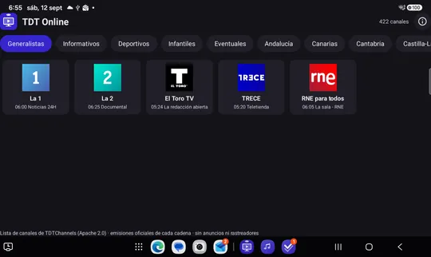
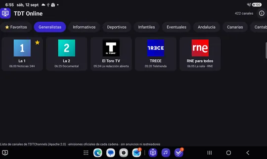
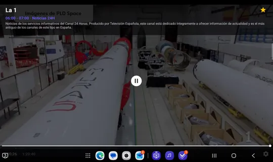

Soporte · TDT Online
Cómo funciona TDT Online, pantalla a pantalla, y qué hace cada opción.
En esta guía



Elige una categoría en la fila de arriba, toca un canal y se abre a pantalla completa. Vuelve atrás para regresar a la lista; el foco vuelve al canal que estabas viendo. Marca tus canales habituales como favoritos para encontrarlos siempre en la primera categoría.
Una fila por canal (favoritos delante) con el programa en curso, su barra de progreso marcada como Ahora, y los siguientes. Arriba, la hora. Con la cruceta se baja de canal en canal y se recorre cada fila; OK sobre el canal o sobre un programa abre el canal. Mientras se prepara, «Cargando la guía de programación…»; si no hay datos, «Ahora mismo no hay guía de programación».
Versión, descripción, Contacto, Idioma (Español / English; se aplica de inmediato), Privacidad, Licencia, Aviso legal y Cerrar.
Esas cadenas (y Neox, Nova, Mega, FDF, Energy, Divinity, Be Mad o Boing) no publican su emisión en abierto: solo se ven en sus propias plataformas, con registro y protección anticopia. La aplicación solo puede ofrecer emisiones abiertas.
Comprueba la conexión a internet y pulsa actualizar (en la tele, el botón Menú o Actualizar del mando). Si has añadido listas propias y alguna no baja, se avisa y se sigue con las demás.
La cadena ha cortado o cambiado su emisión por internet. La aplicación ya ha probado las direcciones de repuesto; inténtalo más tarde.
Solo aparece cuando la cadena tiene su directo encendido en su web; ahora mismo lo tiene apagado, así que no sale.
La guía tarda un momento en cargarse al arrancar («Cargando la guía de programación…»). Si sigue vacía, la fuente de la guía no está disponible en ese momento.
Mantén pulsado OK sobre el canal, o pulsa el botón amarillo mientras lo ves.
En Ajustes, pulsa ↶ para restaurar la lista por defecto.
Abre una incidencia en GitHub contando qué te pasa y con qué versión y dispositivo.